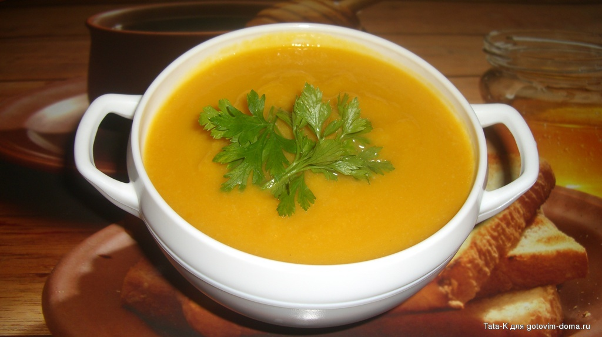

Суп-пюре из цветной капусты
🕰 40 минут
⊛ 5 порций
| Состав: | |
|---|---|
| Бульон | 1.2 литра |
| Сливочное масло | 1 ст. ложка |
| Кочан цветной капусты(небольшой) | 1 шт. |
| Молоко | 1 стакан |
| Тыква | 200 г. |
| Соль | |
| Приготовление: |
Цветную капусту вместе с листьями и кочерыжкой пропустить через мясорубку. Тыкву очистить от кожуры, также пропустить через мясорубку вместе с семенами.
Бульон влить в горшочек, добавить пропущенные через мясорубку овощи, заправить сливочным маслом и солью.
Горшочек накрыть крышкой и поставить в холодную духовку, которую нагреть при среднем огне, на 15 мин.. За 2 мин. до конца варки в горшочек влить горячее молоко.